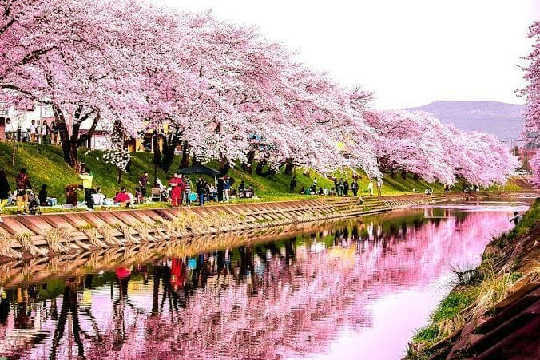

Qué festivales se pueden ver
- Hanami: Este festival se a finales de marzo y principio de abril, donde las personas se reúnen para contemplar las flores de cerezo en los jardines de todo el país.
- Hinamatsuri: Específicamente el 3 de marzo, diferentes familias exhiben muñecas y decoración que son usadas para desear buena salud y prosperidad en las niñas.
- Sanno Mutsuri : A mediados de abril, durante este festival se hacen desfiles usando carrozas, es solo una de las celebraciones que componen el gran festival de Takayama.